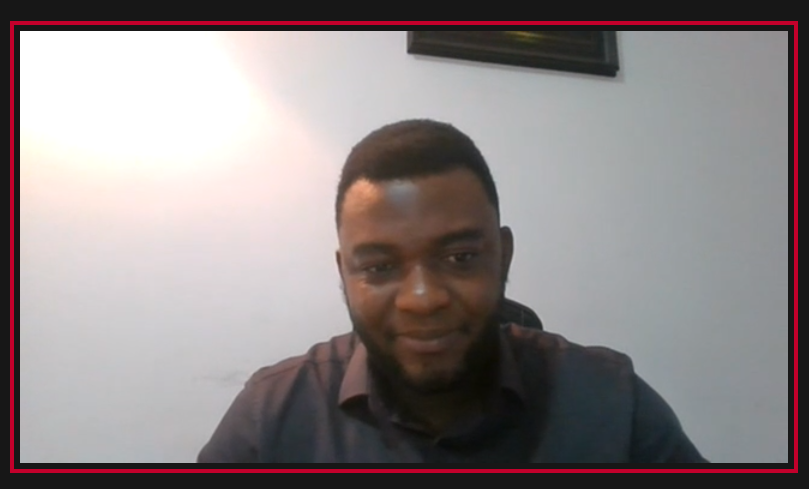

Back
Back
Tech4Dev Announces Strategic Partnership with the Foreign, Commonwealth and Development Office (FCDO) on Digital Literacy Training in Northern Nigeria.
| April 7, 2021


As part of the efforts to empower vulnerable groups in rural clusters in Northern Nigeria with the digital skill set required for the future of work and advanced learnings for the 21st century in Nigeria, Technology for Social Change and Development Initiative (Tech4Dev) and the Foreign Commonwealth and Development Office (FCDO) have signed a resilience training agreement to carry out the Basic Digital Literacy for Rural Clusters in Northern Nigeria.
The program is meant to introduce learners in underserved communities and vulnerable groups in Northern Nigeria to digital literacy to equip them with the basic digital knowledge required to succeed in the 21st-century and the emerging new normal from the COVID19 pandemic.
The Basic Digital Literacy for Rural Clusters in Northern Nigeria program aligns with the Sustainable Development Goals 1, 4 & 10 (No Poverty, Quality Education & Reduced Inequalities). By investing in digital literacy for vulnerable people living in rural clusters in Northern Nigeria, allows for the reduction in the poverty index by increasing the employability of the beneficiaries and closing the digital skills gap needed in the digital economy.
The initiative is designed to directly impact 1,000 beneficiaries, in ten rural clusters, across ten states in Northern Nigeria; Zamfara, Kaduna, Kwara, Kogi, Benue, Sokoto, Jigawa, Nasarawa, Niger and Plateau states. Targeting 50% vulnerable women and girls (aged 8-18; 45-65), 30% Persons with Disabilities (PWDs) and 20% individuals of other vulnerable groups.
Speaking at the virtual media briefing, Joel Ogunsola, Director of Partnership & Sustainability at Tech4Dev, reiterated the need to increase the number of digital literate vulnerable populations and people living in underserved communities in Northern Nigeria. In his address during the briefing, he mentioned that “it has become pertinent, especially on the path of the new normal, to focus on digital literacy allowing vulnerable populations to leverage technology for commerce, education, communication, improve their socio-economic recovery, pandemic resilience, and build a more prosperous future”.
In the same vein, Idongesit Udoh, Head of the UK Government’s Digital Access Programme and Country Adviser, said that “Nigeria’s National Broadband Plan, Nigeria’s Economic Sustainability Plan as well as Nigeria’s Digital Economy Strategy have identified digital skills as key to economic prosperity for all Nigerians. With COVID-19, digital literacy has become a must-have. Hence, the UK Government is once again demonstrating timely support not only for Nigeria’s inclusive economic development but also in building effective COVID-19-related resilience. This project is already helping to close the digital divide, enabling inclusive digital access and building communities’ resilience to current and future pandemics.”
According to the International Finance Corporation (IFC), about 230 million jobs in Sub-Saharan Africa will require digital skills by 2030. This figure is due to the increasing use of technology and automation of jobs. At Tech4Dev, we prepare people for the future of work by creating opportunities for decent work through technology-based training, including coding skills, deep tech skills, employability skills and basic digital skills.